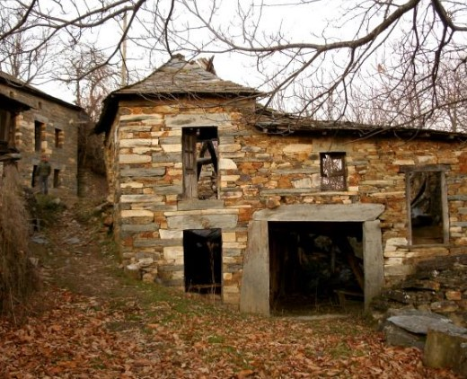
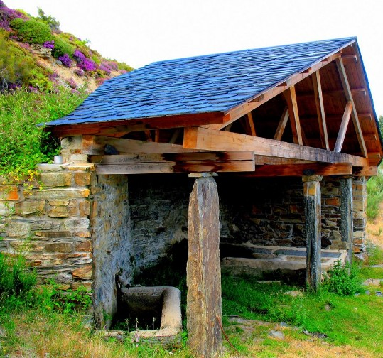

Villarbon

Villarbon es quizá el mejor ejemplo de aquello que hoy llaman la España Vaciada. Si bien es cierto que su ubicación geográfica no es la mas accesible, el abandono de las autoridades locales, autonómicas y estatales, no es menos importante a la hora de hablar de este asunto.
Se trata de el primer pueblo que nos encontramos en sentido ascendente, situado al lado izquierdo, hay que cruzar el río, para luego llegar a el por una pista forestal. Es el pueblo que enlaza el Valle de Ancares con los el Valle de Burbia.
Tristemente estremece pensar que es el futuro que le quedan a muchos de los pueblos de este y otros valles, si los gobernantes se empeñan en no conseguir llevar las comunicaciones a estos lugares, para que los hijos de los que un día emigraron, puedan volver a dar vida a esos pueblos gracias al teletrabajo.
La pandemia del Covid19 ha puesto de manifiesto la nacesidad de un buen desarrollo de las telecomunicaciones e implementación de estas. Solucionar el problema de la España Vaciada está a un click, nunca mejor dicho, ya que el trabajo a distancia a venido para quedarse.

De no ser así, el futuro que espera a los pueblos de los cuales se habla en esta páigna, es simialr al de la imagen que vemos en la derecha.
La fatla de comunicaciones, y la concentración de los puestos de trabajo en grande capitales, o en el extranejero, impide que muchos de los que un día hemos vivido en estos valles, aunque haya sido temporalmente, podamos volver a hacerlo, a revitalizar la economía de estas zonas
e impedir que la historia cultural de la zona, y personal de cada uno de nosotros, se pierda en el olvido y sea pasto de la maleza.
|